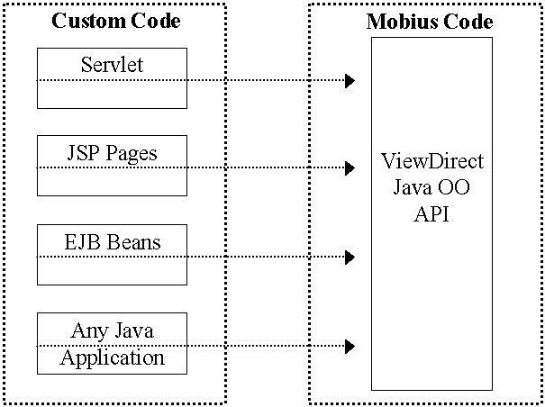

ViewDirect API for Java - Overview
- Click here for access to the ViewDirect API for Java classes documentation.
- Click here to view the ViewDirect API for Java on Windows installation instructions.
- Click here to view the ViewDirect API for Java on Solaris installation instructions.
Contents
Introduction
Factory Classes
Node Classes
IPage and IPageView Interfaces
Commands
Navigation
Using the Enterprise Query Facility
Using the Enhanced Topic Item Search and Filter Query Facility
Error Handling
Setup Verification
Migrating from ViewDirect API for Java version 2.1 to version 4.2
Introduction
Distributed object technology is well-suited for creating flexible client/server systems, because the data and business logic are encapsulated within objects, allowing them to be located anywhere within a distributed environment. Distributed objects enable granular components to be visually assembled via tools, operate across networks, run on different platforms, roam on networks, and coexist with legacy applications through object wrappers. This flexibility is why enterprises use distributed objects for building component-based Web applications. Objects packaged as components provide the ideal infrastructure for delivering robust client/server systems in a distributed environment.
Enterprises are focusing on Customer Relationship Management initiatives, including integrating front office and back-office systems, making all enterprise content available to customers, and building component-based Web applications. These Web applications usually need to run on a distributed platform, such as Sun Solaris, IBM AIX, HP-UX, Windows NT, or Linux.
The ViewDirect API for Java helps you build powerful, scalable, and interactive Web applications. You can give your employees, customers, and business partners access to all the content stored in either ViewDirect for Networks or ViewDirect for MVS. For example, insurance agents can access their enterprise portal to retrieve commission reports and view customer insurance policies, premiums paid, and claim forms. The ViewDirect API for Java allows you to customize
your Web application any way you choose, giving you complete flexibility in determining how your users can access information.
There are a number of ways you can call the ViewDirect API for Java. The figure below illustrates some of these methods, including:
- Servlets. You can write your own servlet to call all the API functions.
- Java Server Pages. You can write your own Java Server Page (JSP) to call the API.
- Enterprise Java Beans. You can call all the API functions from an Enterprise Java Bean (EJB).
- Any Java application. You can use any Java application to call the functions.

Examples of Calling the ViewDirect API for Java
Your custom code can reside on any platform, while the Mobius code can reside on Sun Solaris or Windows NT. Other platforms will be supported in the future.
Components, Packages, and JAR Files
The public ViewDirect API is encapsulated within the com.mobius.vdrapi package and its sub-packages.
Documentation
API Objects
The ViewDirect API for Java includes the following basic types of objects and interfaces: factories; nodes; objects that implement the IPage and IPageView interfaces; and commands. These basic object types provide the entire functionality of the API. The following discussion describes these classes at a high level only. A more detailed description of the classes defined in the API is provided in the javadoc files themselves.
Factory Classes
Factory classes are classes that create objects, lists of objects, or other factories. There are five fundamental factory classes:
DocumentServerFactory
The DocumentServerFactory class is used to create and maintain lists of document servers. A DocumentServerFactory object can be used to:
- Create a list of document servers (objects implementing the IDocumentServer interface) based on query parameters. The document server information is extracted from the Windows INI file or Unix REG file (which contains the user profile).
- Create a new document server definition and place it in the user profile.
- Remove a document server from the user profile and the internal list.
Session
The Session class represents a connection with one or more document servers. A session object can be used to:
- Establish connections with document servers.
- Terminate previously established document server connections.
- Create a ReportListFactory, a TopicListFactory, or a SearchTopicitemsListFactory.
ReportListFactory
The ReportListFactory class facilitates the creation of a list of reports (based upon query parameters) for the document servers to which the session that created the ReportListFactory object is connected. The returned list of ReportNode objects combines the information from all connected servers.
TopicListFactory
The TopicListFactory class facilitates the creation of a list of Topics (based upon query parameters) for the document servers to which the session that created the TopicListFactory object is connected. The returned list of TopicNodes combines the information from all connected servers.
SearchTopicitemsListFactory
The SearchTopicitemsListFactory facilitates the creation of a list of pages (based upon query parameters) for the document servers to which the session that created the SearchTopicitemsListFactory object is connected. Each page in the list is represented by a SearchTopicItemNode object. The returned list of SearchTopicItemNodes combines the information from all connected servers.
Node classes
Consider the reports and topics stored on a document server within the context of a tree hierarchy. The
node classes represent individual entries within that tree hierarchy, and include the following:
|
ReportNode |
- represents a report |
|
ReportVersionNode |
- represents a report version |
|
ReportSectionNode |
- represents a report section |
|
ReportPageNode |
- represents a report page |
|
TopicNode |
- represents a topic |
|
TopicVersionNode |
- represents a topic version |
|
TopicItemNode |
- represents a topic item |
|
TopicReportNode |
- represents a topic report |
|
TopicReportVersionNode |
- represents a topic report version |
|
TopicSectionNode |
- represents a topic section |
|
SearchTopicItemNode |
- represents a report page satisfying a search topic query |
|
DocumentServer |
- abstract class to represent a document server |
The ReportPageNode (created by either a ReportSectionNode or a TopicSectionNode) and the SearchTopicItemNode (created by a SearchTopicItemFactory) each represent an actual page of a report. They are also factories, but in a different sense from the other nodes; each is a Page factory, meaning they include a CreatePage method that constructs a single object (not a list) that implements the IPage interface. This IPage object allows the manipulation of the actual page data. Additionally, the SearchTopicItemNode allows the retrieval of the report information and topic information that corresponds to this node.
The DocumentServer class is an abstract class used to represent a document server. There are specific classes for the different communications protocols that are supported. Among its other capabilities, the DocumentServer class provides a mechanism for changing a server’s password, as well as for configuring various aspects of the server, for example, the recipient ID, password, and various protocol-specific parameters of the server.
The node classes are particularly useful for navigating through the report and topic hierarchies in document servers. For details, see the Navigation section.
Every node contains methods for retrieving information pertinent to that node.
IPage and IPageView Interfaces
Objects implementing the IPage and IPageView interfaces allow the manipulation of the report page data and its view.
Factories that create objects implementing the IPage interface include ReportPageNode and SearchTopicItemNode.
An object implementing the IPage interface encapsulates report page data. It provides methods for retrieving information about the page,
including the page class name and the page class version. In addition, the IPage interface provides a method to return the
actual raw, unrendered data of the page.
An object implementing the IPage class is also a page view factory. It provides a method for creating an object that implements the IPageView interface. An object implementing the IPageView interface represents a view for a given page. The same IPage object can be used to create multiple IPageView objects, each representing a different view of the page data. The objects implementing the IPageView interface provide methods to manipulate the view of the page data, including methods for rotation, scaling, and rendering of the data.
An object implementing the IPageView interface for a graphical report page can be rotated, scaled, rendered, and rendered to a stream.
An object implementing the IPageView interface for a text report page can be rendered, rendered to a stream, and have its font and font color changed. It can not be rotated or scaled.
An object implementing the IPageView interface for an external report page can be rendered to a stream. It can not be directly rendered, nor can it be rotated or scaled.
An object implementing the IPageView interface must be queried to determine its capabilities. For example:
IPage viewOfPage ; // assume this contains a valid IPage object.
if ( viewOfPage instanceof ICanRotate) // Can this page can be rotated?
{
((ICanRotate)viewOfPage).rotate( 90 ); // If so, rotate it 90 degrees.
}
Commands
Commands are objects that perform operations that fall outside the scope of the factory, node, IPage, and IPageView objects described above. Commands are scriptable, meaning that they can be written to disk and played back at a later time.
Types of commands
The LocateNode command is used to locate a node in the topic or report hierarchy for a document server. Effectively, this command programmatically navigates the topic or report hierarchy to find the requested node.
The CreatePageGroup command is used to gather groups of pages, change their output format, and write the results to a stream. The caller can specify the page range that will form the output. Optional parameters allow the caller to specify (1)the output format; (2)if the output should be compressed; or (3) a policy and policy group to be used.
View the complete list of available page input and output format options.
The GoToPage command allows the direct retrieval of a report page. Executing a GoToPage command returns an object that implements the IPage interface. This is more efficient than using the LocateNode command to retrieve a page, or explicitly navigating to the page in question using the node objects and factories described above.
The Find command object is used to find text on a page. It searches the current page and tries to locate the specific text. If this page doesn't have the text, it will locate the page that does.
Using Command Objects
Command object creation requires the following steps:
- Instantiate a new command object. Use the constructor’s parameters to set any callback interfaces the command might need.
- Use the object’s access methods to set any additional callback interfaces.
- Create a list of parameters in string form (key/value pairs) that the command requires.
- Load the parameter list into the command, using the command’s Load method.
- Execute the command.
View an example of standard object creation using the LocateNode command.
Navigation
Navigate through report and topic tree hierarchies using the factory and node classes provided in the API.
The DocumentServerFactory and DocumentServer classes
The first step in navigation is the creation of a DocumentServerFactory object. Once you have created a DocumentServerFactory object,
you can use it to obtain a list of DocumentServer objects identifying the servers defined in the user’s profile. For example, to obtain a list of all the servers:
// Create a DocumentServerFactory object. Note that objectWithProfile is an object that
implements the IhasProfileLocation interface.
DocumentServerFactory dsf = new DocumentServerFactory(objectWithProfile) ;
// Get a list of servers from the factory. Create a query parameter that indicates we want
// all matches. We’ll specify 999 as the maximum returned number of matches.
DocumentServerQueryParam dsqp = new DocumentServerQueryParam( "", ComparisonSpec.GreaterThanOrEqualTo, 999,
SortOrder.Ascending, null ) ;
INode [] ds = dsf.createList( dsqp );
A user profile can contain various document server types, including TCP/IP, Remote, HLLAPI or CPIC document servers.
You can also use the DocumentServerQueryParam object to retrieve a specific type(s) of document servers from a
user profile. The following example retrieves remote document servers only from the profile:
Vector typesAllowed = new Vector();
typesAllowed.add(DocumentServerProtocol.RPC);
// Get a list of servers from the factory. Create a query parameter that indicates we want
// all remote servers. We’ll specify 10 as the maximum returned number of matches.
Also sort the // returned list in ascending order.
DocumentServerQueryParam dsqp = new DocumentServerQueryParam("", ComparisonSpec.GreaterThanOrEqualTo,
10,
SortOrder.Ascending, typesAllowed);
INode [] ds = dsf.createList( dsqp );
Retrieving Document Server Properties
Document server properties are also stored in the user profile. You can use the array of INode objects
returned from the createList method in DocumentServerFactory to retrieve the properties of the
different types of document servers.
View an example of retrieving the properties of all TCP/IP and
Remote document servers defined in the user profile.
Configuring Document Servers
The DocumentServerFactory object can also be used to create or configure new document server(s) in the profile.
// Create a DocumentServerFactory object, objectWithProfile is an object that implements the IHasProfileLocation interface
DocumentServerFactory dsf = new DocumentServerFactory(objectWithProfile);
View an example of configuring a new Remote document server.
View an example of configuring a new TCP/IP document server.
The Session Class
Once a list of servers has been retrieved, you can establish a session with any one or more of these servers as follows:
// This command establishes a session with the third document server in the list of retrieved servers.
Session sess = new Session((IDocumentServer)ds[ 2 ], recipientid, password, securityInfo, traceThreshold );
// Using this same session, you can also establish a connection with the fourth document server in
// the list.
sess.attach( (IDocumentServer)ds[ 3 ], recipientid, password );
The above example exposes a special feature of sessions, namely, that a session can represent a connection to multiple
document servers. If you only need a single document server connection, calling the attach method is not required, as the Session
constructor will create the connection for a single document server.
Having established a session, you can use it to create a report list factory or a topic list factory, which allow you to
navigate their respective hierarchies. You can also use the session to create a search topic item list factory
(which encapsulates the Enterprise Query Facility) for obtaining a list of pages matching search criteria.
Navigating the Report Hierarchy
To navigate the report hierarchy, first create a report list factory:
// Create a report list factory.
ReportListFactory rlf = (ReportListFactory)(sess.createListFactory( SessionFactoryType.Report ));
Having obtained the factory, you can now use it to perform navigation. Use the report list factory to obtain a list of all
reports for all the document servers to which the session is connected:
// Get a list of all reports on the servers.
QueryParam query = new QueryParam("", ComparisonSpec.GreaterThanOrEqualTo, 99999) ;
INode [] rn = rlf.createList( query );
The ReportNode is a report version list factory. Use it to obtain a list of all versions for one of the reports:
// Get a list of all versions on the report at index 3.
QueryParam query = new QueryParam("", ComparisonSpec.GreaterThanOrEqualTo, 99999) ;
INode [] rvn = ((ReportNode)(rn[3])).createList( query );
The ReportVersionNode is a report section list factory. Use it to obtain a list of all sections for a given version:
// Get a list of all sections for the version at index 0.
QueryParam query = new QueryParam("", ComparisonSpec.GreaterThanOrEqualTo, 99999) ;
INode [] rsn = ((ReportVersionNode)(rvn[0])).createList( query );
The ReportSectionNode is a report page list node factory. Use it to obtain a list of all pages in a given section:
// Get a list of all pages for the section at index 0.
QueryParam query = new QueryParam("", ComparisonSpec.GreaterThanOrEqualTo, 99999) ;
INode [] rpn = ((ReportSectionNode)(rsn[0])).createList( query );
Finally, the ReportPageNode is a page factory. Use it to obtain a page object:
// Get a page for the report page node at index 0.
IPage page = ((ReportPageNode)(rpn[0])).createPage();
Navigating the Topic Hierarchy
To navigate the topic hierarchy, first create a topic list factory:
// Create a topic list factory.
TopicListFactory tlf = (TopicListFactory)(sess.createListFactory( SessionFactoryType.Topic ));
You can then use it to obtain a list of all topics on all the document servers to which the session is connected:
// Get a list of all topics on the servers.
QueryParam query = new QueryParam("", ComparisonSpec.GreaterThanOrEqualTo, 99999) ;
INode [] tn = (tf.createList( query ));
The TopicNode is a topic version node list factory. Use it to obtain a list of all topic versions for a given topic:
// Get a list of all topics versions for the topic at index 0.
QueryParam query = new QueryParam("", ComparisonSpec.GreaterThanOrEqualTo, 99999) ;
INode [] tvn = tn[0].createList( query );
The TopicVersionNode is either a topic item list factory or a topic item entry list factory.
As a topic item list factory, you can use it to obtain a list of all topic items for a given topic version:
// Get a list of all topics items for the topic at index 0.
QueryParam query = new QueryParam("", ComparisonSpec.GreaterThanOrEqualTo, 99999) ;
INode [] tin = ((TopicVersionNode)(tvn.[0])).createList( query );
As a topic item entry list factory, you can use it to obtain a list of all topic item entries for a given topic version:
// Get a list of all topics items entries for the topic at index 0.
TopicItemEntryQueryParam query = new TopicItemEntryQueryParam("","","",0, ComparisonSpec.GreaterThanOrEqualTo, 99999) ;
INode [] tien = ((TopicVersionNode)(tvn.[0])).createList( query );
Note: Topic item lists are useful if you are traversing the topic hierarchy and seek high level information about
topic versions. Topic item entry lists are useful if you are seeking detailed information about topic items with multiple report versions.
The TopicItemNode is a topic report node list factory. Use it to obtain a list of all topic reports for a given topic item:
// Get a list of all topics reports for the topic item at index 0.
QueryParam query = new QueryParam("", ComparisonSpec.GreaterThanOrEqualTo, 99999) ;
INode [] trn = ((TopicItemNode)(tin[0])).createList( query );
The TopicReportNode is a topic report version node list factory. Use it to obtain a list of all topic report versions for a given topic report:
// Get a list of all topics report versions for the topic report at index 0.
QueryParam query = new QueryParam("", ComparisonSpec.GreaterThanOrEqualTo, 99999) ;
INode [] trvn = ((TopicReportNode)(trn[0])).createList( query );
The TopicReportVersionNode is a topic section node list factory. Use it to obtain a list of all topic sections for a given topic report version:
// Get a list of all topics sections for the topic report version at index 0.
QueryParam query = new QueryParam("", ComparisonSpec.GreaterThanOrEqualTo, 99999) ;
INode [] tsn = ((TopicReportVersionNode)(trvn[0])).createList( query );
The TopicSectionNode is a report page node list factory. Use it to obtain a list of all report pages for a given topic section:
// Get a list of all report pages for the topic section at index 0.
QueryParam query = new QueryParam("", ComparisonSpec.GreaterThanOrEqualTo, 99999) ;
INode [] rpn = ((TopicSectionNode)(tsn[0])).createList( query );
Finally, the ReportPageNode is a page factory. Use it to obtain a page object:
// Get a page for the report page node at index 0.
IPage page = ((ReportPageNode)(rpn[0])).createPage();
View sample code for retrieving specific pages from a Topic Item
section.
Using the Enhanced Topic Item Search and Filter Query Facility
The new enhanced topic item search facility is supported by the existing SearchTopicItemListFactory.
To create a search topic item list factory:
IListFactory sti = session.createListFactory(SessionFactoryType.SearchTopicItems);
A combination of VdrSearchExpression and VdrSearchTerm classes are used to create enhanced topic item search expressions.
The VdrSearchTerm class is an abstract class that can represent a search term or a sub-expression.
A search term contains:
An Attribute or field (e.g., TopicID, SectionID, etc.), a comparison operator (e.g., GreaterThan, EqualTo, etc.), and comparing value(s).
A sub-expression contains a VdrSearchExpression.
A set of concrete classes are used to create search terms. These are:
- TopicSearchTerm -a TopicID search term
- ReportSearchTerm - a ReportID search term
- VersionSearchTerm - a VersionID search term
- SectionSearchTerm - a SectionID search term
- SubExpressionSearchTerm - a VdrSearchExpression sub-expression
To create a search term instance, define the term (the attribute or field, the comparison operator * and comparing value or values) and call the proper search term constructor.
* Important: Valid operators for a search term are restricted to the query submitted, and only those comparison operators defined within the query can be used.
For example, to build a search term for an EnhancedSearchTopicItemQueryParam instance, only those static comparison operators defined within the EnhancedSearchTopicItemQueryParam class can be used.
Here are some code examples:
Create a SectionID search term for an EnhancedSearchTopicItemQueryParam query:
SectionSearchTerm term1 = new SectionSearchTerm( EnhancedSearchTopicItemQueryParam.LE ,"0003");
Create a TopicID search term for an EnhancedSearchTopicItemQueryParam query:
TopicSearchTerm term2 = new TopicSearchTerm("ACCTCD", EnhancedSearchTopicItemQueryParam.GT ,"1234");
A VdrSearchExpression instance represents an enhanced topic item search expression. It contains either a VdrSearchTerm or a VdrSearchExpression sub-expression, joined by 'AND' or 'OR' conjunction operators.
To create a VdrSearchExpression object, either call its constructor with the appropriate conjunction:
VdrSearchExpression andSearchExp = new VdrSearchExpression(SearchConjunction.AND);
Or call the static helper method:
VdrSearchExpression andSearchExp = VdrSearchExpression.createAndExpression();
Adding search terms is performed by calling the expression's addTerm() method.
andSearchExp.addTerm(term1);
andSearchExp.addTerm(term2);
A ResultOptions instance represents a group of result-set options applied while performing an enhanced topic item search. These options include:
- Topic grouping
- Whether document references are returned
- Which result columns are to be returned and their order
- How to consolidate results
- Method of Search
- The request count
To create ResultOptions with default values:
ResultOptions resOptions = new ResultOptions();
ResultOptions default values are:
- Topics are grouped by SEARCHCRITERIA (Requests the return of values for all topics specified as search criteria. The return values also include the report, report version and section for the returned matches)
- Document References will be returned (full document details)
- Result consolidation is by PAGERANGE (Consolidates consecutive matching pages into a single search result)
- Search Operation mode is SEARCH (Returns all occurrences of each matching topic item value)
The request count is always required (can also be set within the ResultOptions instance).
Create an instance of EnhancedSearchTopicItemQueryParam with the enhanced search expression, request count and the result options as parameters:
qParam = new EnhancedSearchTopicItemQueryParam(andSearchExp, reqCount, resOptions);
Submitting an instance of EnhancedSearchTopicItemQueryParam as a parameter to the SearchTopicItemListFactory's createList method signifies an enhanced topic item search, and will return an array of EnhancedSearchTopicItemNode objects.
EnhancedSearchTopicItemNode estin = null;
INode[] enodes = null;
try {
enodes = sti.createList(qParam);
}
catch(DataNotFoundException dnfe) {
...
}
// process EnhancedSearchTopicItemNode objects
for ( int i = 0; i < nodes.length; i++ ) {
estin = (EnhancedSearchTopicItemNode)nodes[i];
...
}
Each EnhancedSearchTopicItemNode object represents one row.
Using the Enterprise Query Facility
Use the SearchTopicItemsListFactory to return a list of pages meeting some specific criteria:
// Create a search topic item list factory.
SearchTopicItemsListFactory stilf = (SearchTopicItemListFactory) hSession.createListFactory( SessionFactoryType.SearchTopicItems );
The SearchTopicItemListFactory is an ISearchTopicItemResult list factory. Use it to create a list of ISearchTopicItemResult objects:
SearchTopicItemQueryParam squeryParam = new SearchTopicItemQueryParam(null, null, 10) ;
// Just create some default search constraints
TopicSearchConstraint [] searchConstraint = new TopicSearchConstraint[1] ;
// Set fields
searchConstraint[0] = new TopicSearchConstraint() ;
searchConstraint[0].topicIdConstraint.target1 = "ACCTCHK" ;
searchConstraint[0].topicIdConstraint.comparison = SQLComparisonSpec.EqualTo ;
searchConstraint[0].topicItemConstraint.target1 = "543" ;
searchConstraint[0].topicItemConstraint.comparison = SQLComparisonSpec.GreaterThanOrEqualTo ;
// Set this search constraint as the topic constraint
squeryparam.setTopicSearchConstraints(searchConstraint) ;
INode [] stin = (stilf.createList(squeryParam));
Finally, the ISearchTopicItemResult is a page factory. Use it to obtain a page object:
// Get a page for the report page node at index 0.
IPage page = (IPage)((IPageFactory(stin[0])).createPage();
Error Handling
Error handling in the ViewDirect API for Java is managed by throwing and catching exceptions. An extensive set of exceptions has been defined to describe the possible errors that can occur while using the API. The thrown exceptions all derive from the ViewDirectException class. Consult the
documentation for the various API classes for details of the specific exceptions thrown.
When using the API, you must execute methods of classes that throw exceptions within the context of a "try-catch" block, or the code will not compile.
Setup Verification
The ViewDirect API for Java provides tools to help verify that you set up your Web application correctly.
- The ApiInitializer class automates certain configuration tasks that must be performed prior to deploying your application, such as ensuring that the application points to the required library files
- The ApiVerifier class contains specific tests to help verify that the system environment for your is set up correctly
- The ApiVerfierResult class lets you can review additional information about the outcomes of these tests
Consult the documentation for these classes for further details.
Migrating from ViewDirect API for Java version 2.1 to version 4.2
This section describes changes that must be made in order for your code to work when upgrading from ViewDirect API for Java version 2.1 to version 4.2.
Required Code Changes
com.mobius.vdrapi.IHasProfileLocation.java
Interface IHasProfileLocation.java now has only one method
- public String getProfileLocation();
which returns the name of the profile XML file. This new method replaces the old getPrimaryLocation() and getSecondaryLocation() methods from version 2.1.
Any existing code that implements this interface must be modified to have a getProfileLocation() method otherwise MethodNotFound Exceptions shall occur and your code will not run.
com.mobius.vdrapi.IDocumentServer.java
Interface IDocumentServer.java contains new methods in version 4.2.
- public boolean getAllowMixedCaseLogin() ;
- public void setAllowMixedCaseLogin(boolean value) throws DataIOException;
These methods set and get the flag that indicates whether or not the document server is configured for mixed case login.
If any existing code is implementing this interface it needs to be modified to implement the above methods otherwise MethodNotFound Exceptions shall occur and your code will not run.
Interface IPage.java contains new methods in version 4.2 some of which are deprecated. If any of your code is implementing this interface it will no longer run under 4.2 so it is necessary that it be changed to no longer implement this interface. Instead of implementing this interface it is more desirable to have your code reference the Page.java and its subclasses (i.e. AFPPage.java, PDFPage.java etc…) directly.
Interface IRenderUsingPresentation.java is now deprecated in version 4.2. If any of your code is implementing this interface it will no longer run under 4.2 so it is necessary that it be changed to no longer implement this interface. Instead of implementing this interface it is more desirable to have your code reference one of the page view classes that supports presentations (i.e. LPFDPageView.java) directly.
Optional Code Changes
The PolicyListFactory.java and XMLPageView.java classes are now deprecated in version 4.2. Your code may continue to reference these classes as there are no changes that should affect existing code. Be aware that referencing deprecated classes is not recommended as in future versions these classes may be removed which would then cause ClassDefNotFound errors at run-time.
Recompiling Custom Applications
If any of your code was modified it is required that the application be recompiled with the new ViewDirect API for Java 4.2 jar file to ensure there are no compilation errors.
If no code has been modified, then it is recommended, yet not required, that the application be recompiled with the new ViewDirect API for Java 4.2 jar file.